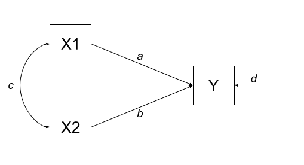
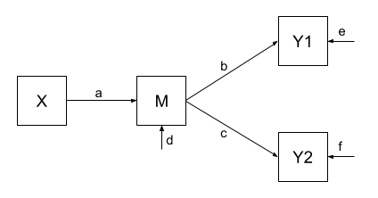
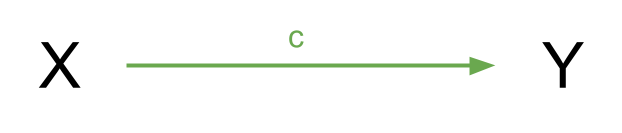
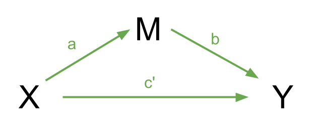

Week 9 Exercises: Path Analysis & Mediation
How does Path Analysis work?
The logic behind path analysis is to estimate a system of equations that best reproduce the covariance structure that we see in the data.
- We specify our theoretical model of the world as a system of paths between variables that represent which variables influence which other variables. This is simply a diagramatic way of specifying a set of equations.
- A single headed arrow from \(X \rightarrow Y\) indicates that Y “listens to” X - if X changes, then Y will change accordingly (but not vice versa)
- A double headed arrow between \(X \leftrightarrow Y\) indicates that these two variables are related, not because one causes the other, but because there is some mechanism outside of our model that results in these two variables being associated.
- We collect data on the relevant variables and we observe a covariance matrix (i.e. how each variable covaries with every other variable).
- We fit our model to the data, and evaluate how well our theoretical model (the estimated values for our path coefficients) can reproduce the observed covariance matrix.
Terminology
- Exogenous variables are a bit like what we have been describing with words like “independent variable” or “predictor”. In a path diagram, they have no arrows coming into them from other variables in the system, but have paths going out to other variables.
- Endogenous variables are more like the “outcome”/“dependent”/“response” variables we are used to. They have some arrow coming into them from another variable in the system (and may also - but not necessarily - have paths going out from them).
optional: The fun details!
For Path Diagrams that meet a certain set of pre-requisites, we can use a cool technique called “Path Tracing” to move between the path estimates and the implied covariances between a set of variables. The process is much easier with correlations, so in the examples below everything is standardised to have a variance of 1, meaning that covariance == correlation.
For us to be able to do this, a Path Diagram must meet these criteria:
- The model has no two-way causal relations or feedback loops (e.g. \(A \rightarrow B \rightarrow C \rightarrow A\) ).
- All relations are linear and additive.
- ‘causes’ are unitary (if A -> B and A -> C, then it is presumed that this is the same aspect of A resulting in a change in both B and C, and not two distinct aspects of A, which would be better represented by two correlated variables A1 and A2).
- The variables are measured without error (we will relax this assumption later on by including latent variables).
- Endogenous variables are not connected by correlations (we would correlate the residuals instead, because residuals are not endogenous).
- The residuals (error terms) are uncorrelated with exogenous variables.
- All our exogenous variables are correlated (unless we specifically assume that their correlation is zero).
causality?
Path models allow us to reason about ‘cause and effect’, without having to conduct an experiment and manipulate a given variable. However, there is nothing special about the statistical machinery or techniques here that makes our results ‘causal’. The extent to which we can claim ‘causation’ is entirely model-dependent. That is, the use of ‘causal’ refers to an assumption that our model includes all relevant causal relations (and captures them appropriately). When we test these models, a good fitting model does not prove that the causal assumptions are correct.
Path Tracing Rules
Thanks to Sewal Wright, we can express the correlation between any two variables in the system as the sum of all compound paths between the two variables1.
compound paths are the products of any paths you can trace between A and B for which there are:
- no loops
- no going forward then backward (and no going forward then across a curved arrow)
- maximum of one curved arrow per path
Example 1
Let’s consider the example below, for which the paths are all labelled with lower case letters \(a, b, c, \text{and } d\). In this case, we have two exogenous variables X1 and X2 that both influence a single outcome Y. This is actually just a multiple regression expressed as a path diagram!
According to Wright’s tracing rules above, we can write out the equations corresponding to the 3 correlations between our observed variables (remember that \(r_{a,b} = r_{b,a}\), so it doesn’t matter at which variable we start the paths).
There is only one way to move between X1 and X2, according to Wright’s rules, and that is to go via the double headed arrow \(c\). There are two ways to go from X1 to Y - we can go across the double headed arrow to X2, and then go from X2 to y (path \(bc\)), or we can go directly from X1 to Y (path \(a\)). To get from X2 to Y, we can go either via X1 (path \(ac\)), or go directly (path \(b\)).
| covariance | paths |
|---|---|
| \(r_{x1,x2}\) | c |
| \(r_{x1,y}\) | a + bc |
| \(r_{x2,y}\) | b + ac |
Suppose that we fit this model to some data using something like our good friend maximum likelihood estimation, and we get some estimates for our path coefficients such as those below:
Code
library(tidyverse)
library(lavaan)
# our data:
egdata <- read_csv("../../data/path_eg1.csv")
# our model formula
mod.formula <- "y ~ x1 + x2"
# fitted to some data
mod.est <- sem(mod.formula, data = egdata)
# extract parameters:
parTable(mod.est) |> select(lhs,op,rhs,est) lhs op rhs est
1 y ~ x1 0.612
2 y ~ x2 0.382
3 y ~~ y 0.310
4 x1 ~~ x1 0.995
5 x1 ~~ x2 0.359
6 x2 ~~ x2 0.995With this set of path estimates (\(a = 0.61\), \(b = 0.38\), and \(c = 0.36\)), we can calculate the correlation that is implied by our estimated model:
| covariance | paths | model implied correlation |
|---|---|---|
| \(r_{x1,x2}\) | c | \(0.36\) |
| \(r_{x1,y}\) | a + bc | \(0.61 + (0.38 \times 0.36) = 0.75\) |
| \(r_{x2,y}\) | b + ac | \(0.38 + (0.61 \times 0.36) = 0.60\) |
We can then examine how far off this is from the observed covariance matrix. In this specific case, our covariance matrix has 6 values in it, and we are estimating 6 things (see the parameters above). This means that there is unique solution, and our model is just-identified (or “saturated”), and is capable of perfectly reproducing the covariance matrix.
cov(egdata) |> round(2) x1 x2 y
x1 1.00 0.36 0.75
x2 0.36 1.00 0.60
y 0.75 0.60 1.00
why 6? the model in full
The variances of individual variables (also covariances of each variable with itself) are also in our covariance matrix on the diagonals, and in full, our model also includes the estimation of variances of exogenous variables, as well as the residual variance of endogenous variables. These can be represented as the paths \(d\), \(e\) and \(f\) in Figure 2.
| covariance | paths |
|---|---|
| \(r_{x1,x2}\) | c |
| \(r_{x1,y}\) | a + bc |
| \(r_{x2,y}\) | b + ac |
| \(r_{x1,x1}\) | e |
| \(r_{x2,x2}\) | f |
| \(r_{y,y}\) | d + a\(^2\) + b\(^2\) + acb + bca |

Example 2
One benefit of a path model over a regression model is that we can include multiple endogenous variables. In Figure 3, we can see now a model in which we have two outcomes (Y1 and Y2), an exogenous predictor X, and a variable M that sits on the path between X and the two outcomes. In this case, M is itself an outcome of Z.

Using the path tracing rules, there is only one way to get between X and M, and that is the path \(a\). There is only one way to get between M and Y1 (path \(b\)), and only one way to get between M and Y2 (path \(c\)). To get between X and Y1, we can only go via \(ab\), and to get between X and Y2, we can only go via \(ac\). To get between Y1 and Y2, we can go backwards to M and then forwards to Y2, the path \(bc\).
| covariance | paths |
|---|---|
| \(r_{x,m}\) | a |
| \(r_{m,y1}\) | b |
| \(r_{m,y2}\) | c |
| \(r_{x,y1}\) | ab |
| \(r_{x,y2}\) | ac |
| \(r_{y1,y2}\) | bc |
As with the previous example, we fit our model to some sample data, and get some estimates for the parameters:
Code
# our data:
egdata2 <- read_csv("../../data/path_eg2.csv")
# our model formula
mod.formula <- "
y1 ~ m
y2 ~ m
m ~ x
# by default, lavaan will correlate the residual variance
# for the purposes of this example, to match our model exactly,
# we'll constrain it to 0:
y1~~0*y2
"
# fitted to some data
mod.est <- sem(mod.formula, data = egdata2)
# extract parameters:
parTable(mod.est) |> select(lhs,op,rhs,est) lhs op rhs est
1 y1 ~ m 0.520
2 y2 ~ m 0.187
3 m ~ x 0.461
4 y1 ~~ y2 0.000
5 y1 ~~ y1 0.728
6 y2 ~~ y2 0.963
7 m ~~ m 0.786
8 x ~~ x 0.998And the estimated path coefficients of \(a = 0.46\), \(b = 0.52\) and \(c = 0.19\), imply that our covariances are:
| covariance | paths | model implied covariance |
|---|---|---|
| \(r_{x,m}\) | a | \(0.46\) |
| \(r_{m,y1}\) | b | \(0.52\) |
| \(r_{m,y2}\) | c | \(0.19\) |
| \(r_{x,y1}\) | ab | \(0.46 \times 0.52 = 0.24\) |
| \(r_{x,y2}\) | ac | \(0.46 \times 0.19 = 0.09\) |
| \(r_{y1,y2}\) | bc | \(0.52 \times 0.19 = 0.10\) |
Finally, our observed covariances are here:
cov(egdata2) |> round(2) y1 y2 m x
y1 1.00 0.06 0.52 0.49
y2 0.06 1.00 0.19 0.06
m 0.52 0.19 1.00 0.46
x 0.49 0.06 0.46 1.00But wait.. unlike the first example, this one does not perfectly reproduce our the covariances we observe. This is because our model is over-identified. We are trying to recreate our covariance matrix with 10 values in it using only 7 unknown parameters. This is a good thing! It means we can assess the fit of the model to the data, and evaluate the plausibility of the proposed relationships!
Notably, some of our “model implied covariances” are quite different to those in our observed covariance matrix (e.g, the model implies that \(r_{x,y1} = 0.24\), but we actually observe it to be 0.49!).
Example 3
In Example 2, our theoretical model proposed that all of the association that we might observe between X and Y1 is due to the relationship that X has with M, and that M in turn has with Y1. However, an alternative model (see Figure 4) could propose that X still directly influences Y1 beyond the influence it exerts via M. We would indicate this via an additional path (path \(g\) in Figure 4).

Fitting this model (to the same data), we get out estimates for the paths (including this additional parameter):
Code
# our model formula
mod.formula <- "
y1 ~ m + x
y2 ~ m
m ~ x
# by default, lavaan will correlate the residual variance
# for the purposes of this example, to match our model exactly,
# we'll constrain it to 0:
y1~~0*y2
"
# fitted to the same data as for example 2
mod.est <- sem(mod.formula, data = egdata2)
# extract parameters:
parTable(mod.est) |> select(lhs,op,rhs,est) lhs op rhs est
1 y1 ~ m 0.375
2 y1 ~ x 0.313
3 y2 ~ m 0.187
4 m ~ x 0.461
5 y1 ~~ y2 0.000
6 y1 ~~ y1 0.651
7 y2 ~~ y2 0.963
8 m ~~ m 0.786
9 x ~~ x 0.998Our covariances between variables are, in this model, expressed as:
| covariance | paths | model implied covariance |
|---|---|---|
| \(r_{x,m}\) | a | \(0.46\) |
| \(r_{m,y1}\) | b + ag | \(0.38 + (0.46 \times 0.31) = 0.52\) |
| \(r_{m,y2}\) | c | \(0.19\) |
| \(r_{x,y1}\) | ab + g | \((0.46 \times 0.38) + 0.31 = 0.49\) |
| \(r_{x,y2}\) | ac | \(0.46 \times 0.19 = 0.09\) |
| \(r_{y1,y2}\) | bc + gac | \((0.38 \times 0.19) + (0.31 \times 0.46 \times 0.19) = 0.10\) |
And now, when we look at our observed covariance matrix, we are doing a much better job of recreating it, than we did with the model from Example 2!
cov(egdata2) |> round(2) y1 y2 m x
y1 1.00 0.06 0.52 0.49
y2 0.06 1.00 0.19 0.06
m 0.52 0.19 1.00 0.46
x 0.49 0.06 0.46 1.00Toy Example: Education and Salary
library(lavaan)
set.seed(777)
df = tibble::tibble(
Educ = round(rnorm(390, 15.5, 3)),
Skill = scale(.6*scale(Educ) + rnorm(390))[,1],
Salary = scale(.12*scale(Educ) + .3*Skill + rnorm(390))[,1]*12.3 + 39.533
)
m="
Salary ~ c*Educ + b*Skill
Skill ~ a*Educ
ind:=a*b
total:=a*b+c
"
sem(m, df) |> summary()lavaan 0.6.17 ended normally after 1 iteration
Estimator ML
Optimization method NLMINB
Number of model parameters 5
Number of observations 390
Model Test User Model:
Test statistic 0.000
Degrees of freedom 0
Parameter Estimates:
Standard errors Standard
Information Expected
Information saturated (h1) model Structured
Regressions:
Estimate Std.Err z-value P(>|z|)
Salary ~
Educ (c) 0.482 0.215 2.239 0.025
Skill (b) 3.568 0.679 5.254 0.000
Skill ~
Educ (a) 0.166 0.014 12.125 0.000
Variances:
Estimate Std.Err z-value P(>|z|)
.Salary 130.239 9.327 13.964 0.000
.Skill 0.724 0.052 13.964 0.000
Defined Parameters:
Estimate Std.Err z-value P(>|z|)
ind 0.591 0.123 4.821 0.000
total 1.073 0.190 5.657 0.000#lm(Salary ~ Educ + Skill,df) |> summary()
Question 1
read in the dataset.
suppose that the only statistical machinery available is the good old regression models with lm(). What is the estimated effect of education on salary?
Question 2
Instead, let’s suppose we are actually interested in the mechanism of how education influences salary. do more educated people tend to have higher salaries entirely because of the skills obtained during their education?
Direct, Indirect and Total effects
In path diagrams:
- Direct effect = one single-headed arrow between the two variables concerned
- Indirect effect = An effect transmitted via some other variables
If we have a variable \(X\) that we take to ‘cause’ variable \(Y\), then our path diagram will look like so:

In this diagram, path \(c\) is the total effect. This is the unmediated effect of \(X\) on \(Y\).
However, while the effect of \(X\) on \(Y\) could in part be explained by the process of being mediated by some variable \(M\), the variable \(X\) could still affect \(Y\) directly.
Our mediating model is shown below:

In this case, path \(c'\) is the direct effect, and paths \(a\) and \(b\) make up the indirect effect.
You will find in some areas people talk about the ideas of “complete” vs “partial” mediation.
- Complete mediation is when \(X\) does not influence \(Y\) other than its influence through \(M\) (therefore path \(c'\) would not be significantly different from zero).
- Partial mediation is when the path from \(X\) to \(Y\) is reduced in magnitude when the mediator \(M\) is introduced, but still different from zero.
- The Proportion Mediated is the amount of the total effect of \(X\) to \(Y\) that goes via \(M\). i.e. \(\frac{a \times b}{c}\) in the images above.
fit a path model in which education has an effect on salary both directly and indirectly, via its influence on the skills obtained.
Question 3
While the model in the previous question better reflects our theoretical notions of how these variables are actually related, we are yet to get an estimate of the indirect effect.
Defined Parameters in lavaan
To specifically test the indirect effect, we need to explicitly define the indirect effect in our model, by first creating a label for each of its sub-component paths, and then defining the indirect effect itself as the product of these two paths (why the product? Click here for a lovely explanation from Aja).
To do this, we use a new operator, :=.
“This operator ‘defines’ new parameters which take on values that are an arbitrary function of the original model parameters. The function, however, must be specified in terms of the parameter labels that are explicitly mentioned in the model syntax.”^(the lavaan project)] The labels are entirely up to us, we can use “a”, “b” and “c”, or “dougal”, “dylan” and “ermintrude”, they’re just labels!
med_model <- "
Y ~ b*M + c*X
M ~ a*X
indirect := a*b
total := a*b + c
"Edit your model formula to also estimate the total and indirect effects, and re-fit the model.
No X-M Interaction: The effect of M on Y or b does not vary across levels of X. Causal Direction: The variable M causes Y, by Y does not cause M. Perfect Reliability in M: The reliability of M is perfect.
No Confounding: There is no variable that causes M and Y.
Why Bootstrap?
We are computing our indirect effect as the product of the sub-component paths. However, this results in the estimated indirect effect rarely following a normal distribution, and makes our usual analytically derived standard errors & p-values inappropriate.
Instead, bootstrapping has become the norm for assessing sampling distributions of indirect effects in mediation models (remember, bootstrapping involves resampling the data with replacement, thousands of times, in order to empirically generate a sampling distribution).
We can do this easily in lavaan:
mod.est <- sem(model_formula, data=my_data, se = "bootstrap")
# to print out the confidence intervals:
summary(mod.est, ci = TRUE)Footnotes
if we were wanting covariances, and we didn’t have standardised variables, then these would have to be multiplied by the corresponding variance estimates for the variables↩︎